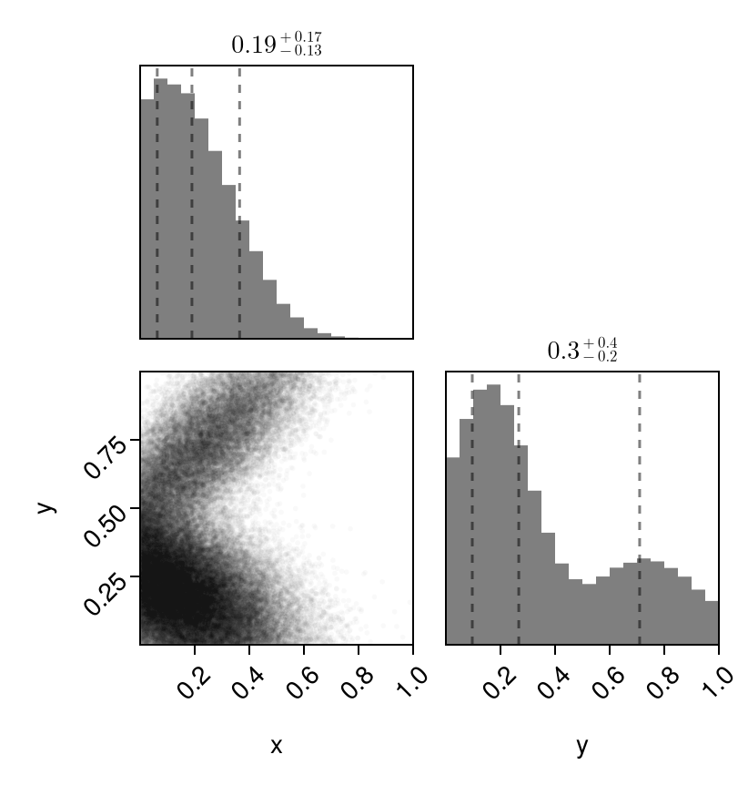
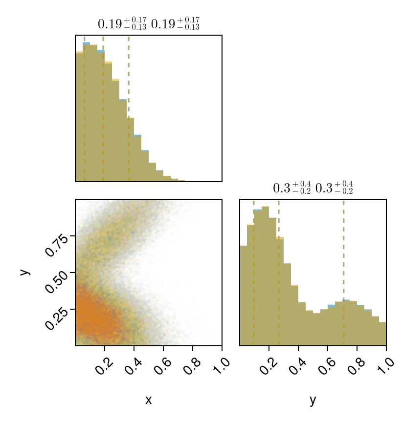

Simplest Example
Here is the simplest example of trying to fit some data to a mixture of multivariate truncated gaussians.
Let us first generate some example data from some mixture of truncated normals, and then fit to them.
TruncatedGaussianMixtures exports the TruncatedMvNormal distribution, which can created as shown below using a normal MvNormal distribution from Distributions.jl.
using TruncatedGaussianMixtures
using DataFrames, Distributions, CairoMakie, PairPlots
# Lets generate some variables
a = [0.0, 0.0]; b = [1.0, 1.0] # Lower and upper limits of the bounding box
# Generate a mixture of truncated gaussian mixtures
μ1 = [0.2, 0.7];
Σ1 = [0.05 0.04;0.04 0.05];
μ2 = [0.1, 0.2];
Σ2 = [0.05 -0.02;-0.02 0.03];
dist = MixtureModel(
[TruncatedMvNormal(MvNormal(μ1, Σ1), a, b),
TruncatedMvNormal(MvNormal(μ2, Σ2), a, b)],
[0.3, 0.7]
)
df = DataFrame(rand(dist, 80_000)', [:x, :y])
pairplot(df => (PairPlots.MarginHist(),PairPlots.Scatter(markersize=4, alpha=0.05), PairPlots.MarginConfidenceLimits()))
Lets fit this data to a TGMM with two components. cov can either be
:diagfor diagonal covariance matrices, orfullfor general covariance matrices.
Since we have allowed correlations in the TGMM components above, we will use full.
gmm = fit_gmm(df, 2, a, b; cov=:full, tol=1e-5, progress=true);[32mProgress: 100%|█████████████████████████████████████████| Time: 0:00:04
The tol keyword sets the stopping criteria of the EM algorithm (one can play with this), and progress will allow one to see a progress bar.
Since the gmm object we output is simply a Distributions.jl object, we can just use rand and generate samples we need from it.
df_fit = DataFrame(rand(gmm, 80_000)', [:x, :y]);Now let us see how well we fit the distribution.
pairplot(
df => (PairPlots.MarginHist(),PairPlots.Scatter(markersize=4, alpha=0.03), PairPlots.MarginConfidenceLimits()),
df_fit => (PairPlots.MarginHist(),PairPlots.Scatter(markersize=4, alpha=0.03), PairPlots.MarginConfidenceLimits())
)
Looks good to me!